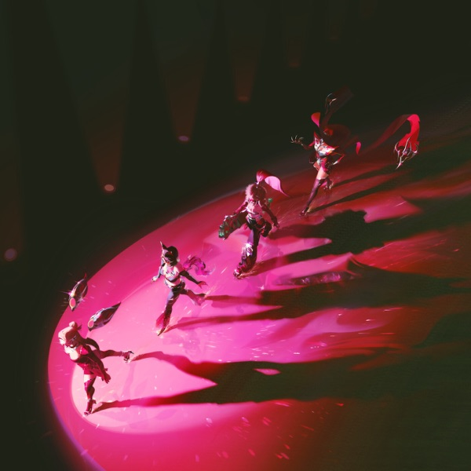
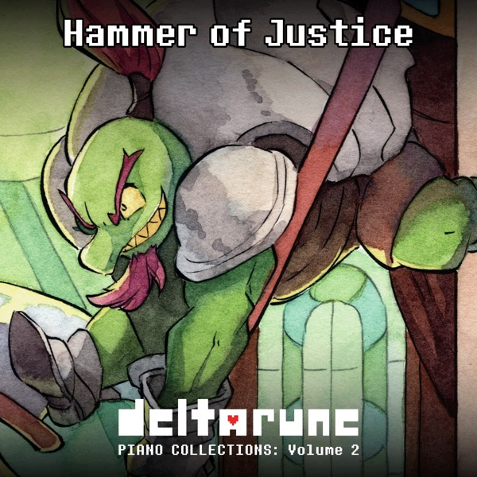
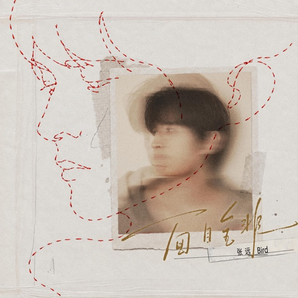
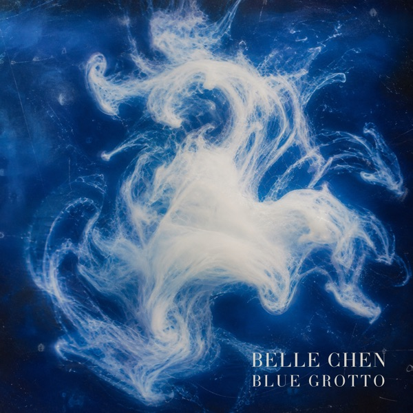
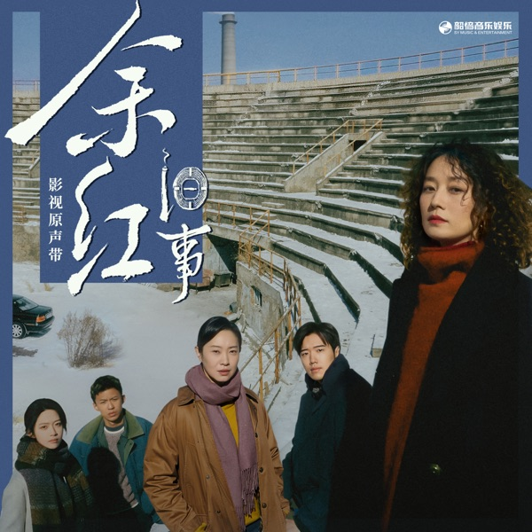
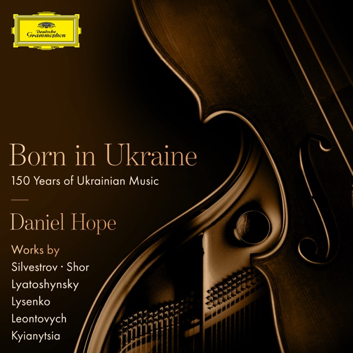
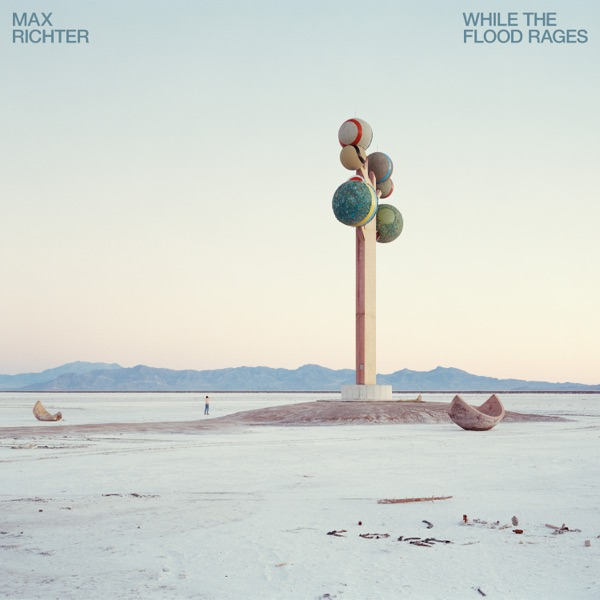
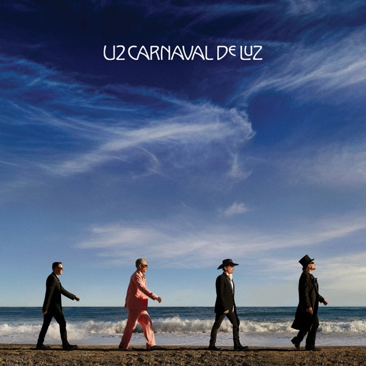
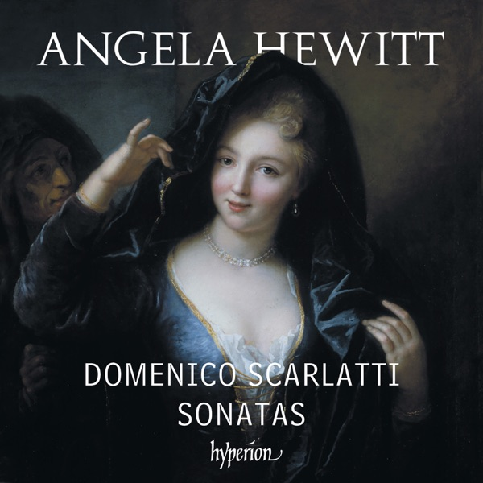

杭州→上海 · 台风雨夜听歌
滴滴城际拼车，杭州到上海。外面是台风的雨，耳机里听 Spotify 新歌雷达。工作周结束后，期待次日 QCon 上海。
The Poem of Life / 生命之诗 · 陈致逸
整张已录 MiniDisc；当晚在 Spotify 听到第 12 轨 The Unfinished Poem。听感：非常完整。
听歌时间线 · Timeline

2026-10-18 发行；MV 由 Fortiche 制作。游戏虚拟团与真人歌手的声线叠合。
体会：很吵。

游戏配乐的钢琴改编，不是古典奏鸣曲，却用钢琴织体把战斗感压成室内声响。
体会：钢琴，但不是古典。

2026-10-22 新歌。张远：快男 2007 第 9、至上励合队长、创造营 2019《侥幸者》、成名曲《嘉宾》；远行巡演杭州站约在 10/24–25。
体会：这个男声很好；出道到现在二十年，听起来已经很成熟。
剧场版《来自深渊 觉醒的神秘》主题；OST 当日发行语境。虚拟歌手（Hololive EN Myth）与作曲家合作。
体会：新歌，完全不了解。由此聊到虚拟歌手：形象、声音与传统身份合一不同，可以打散组合。

牧神午后前奏曲改编为竖琴、中提琴与长笛三重奏；真实演奏者的律动需要彼此合作。
体会：古典，有真实的演奏者，律动还需要合作。


周华健制作并作曲，黄婷作词，吴加恩编曲。这段时期编曲复杂、有凌厉感。
体会：新曲，前奏有意思，细碎的声音；周华健这段时期都是这种感觉，复杂有凌厉。
原曲出自 1996 钢琴三重奏专辑；此为室内乐改编版。坂本龙一 2023 年辞世。
体会：版本龙一来了：熟悉的旋律，不同的乐器质感。问：这张是改编吗？

出自 1965《Rubber Soul》特别版会话录音（1965-11-06）；Giles Martin 新混音。正式版后来写了 bridge 换掉两段 12 小节器乐。专辑处于偶像流行转向录音室实验的分水岭。
体会：beatles 来了。问：这张是什么时期的专辑？

西尔维斯特罗夫挽歌；霍普小提琴、基亚尼察钢琴。专辑追溯乌克兰 150 年音乐史。
体会：古典又来了，起初感觉是大提琴，后确认是小提琴。慢慢进入城市了。

脱胎于与 Wayne McGregor 舞剧 MaddAddam（阿特伍德末日三部曲）。第二幕里最田园、近民谣的一段；曲名来自英国「告诉蜜蜂」的乡间习俗。
体会：Max Richter，我熟悉的。

第三支单曲，与 Brian Eno 合写；九年后首张全新专辑中的一轨。恋人彼此守信、也守信念本身。
体会：新曲子，有人声。
生命之诗第 12 轨：未完成的诗。专辑已有完整 MD 衬页页。
体会：这首曲子我熟悉，这张专辑我录了 MD，一整张。听感：非常完整的感觉。

Essercizi 第一首，休伊特十年后再录斯卡拉蒂的开场。旋律常出现在教材与合辑，名字却少人对得上。
体会：旋律的感觉有点耳熟，但是看了一下不认识。
远距离也能跑过去的情歌；制作有 Crush、ELO、THAMA、g0nny。Loco 签 Duo Entertainment 后的新发。
体会：新歌。好久没有听的韩国歌手，曾有段时间听很多遍。